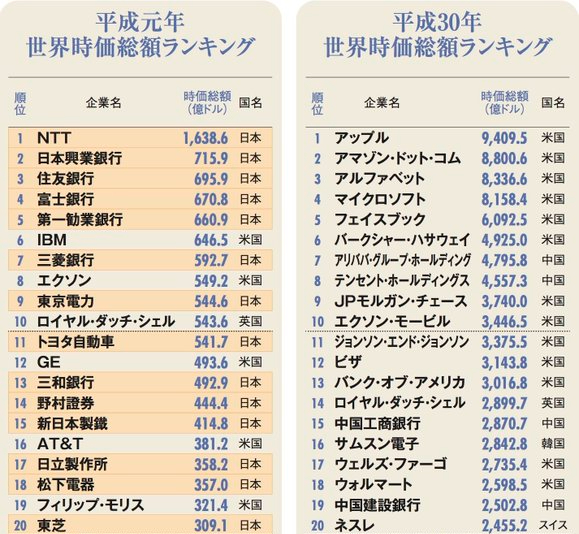
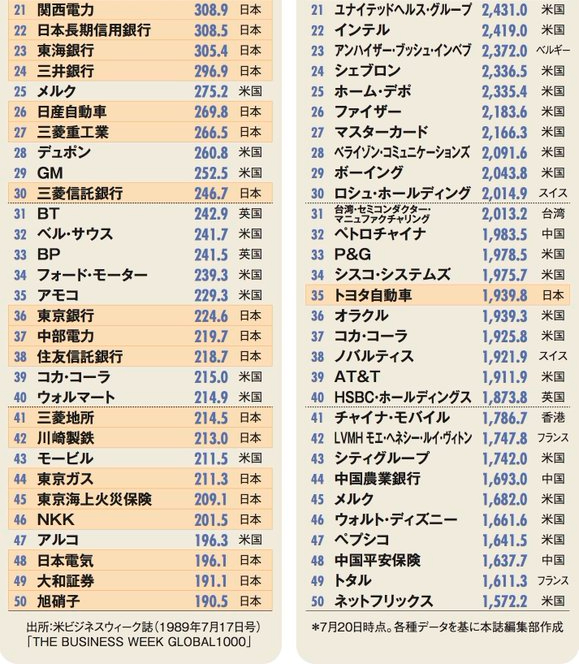
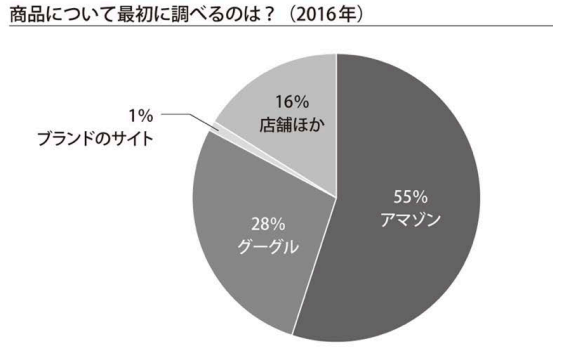
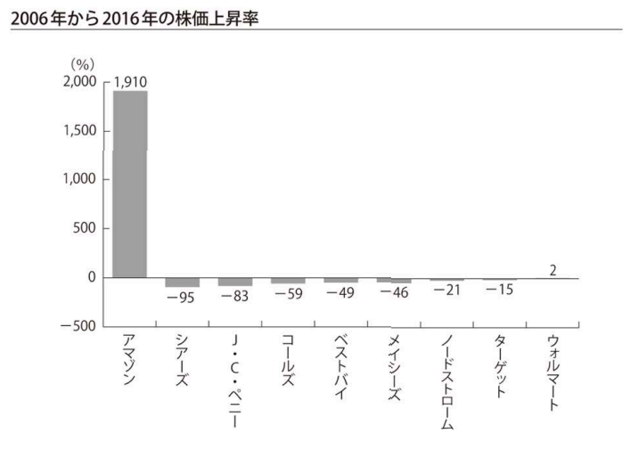
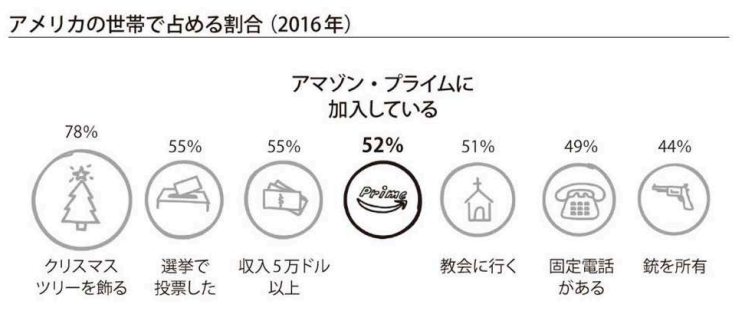
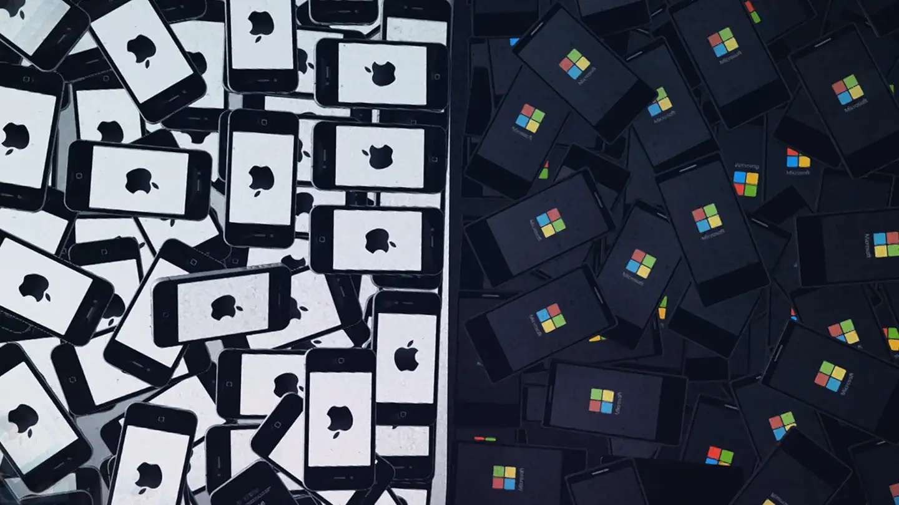
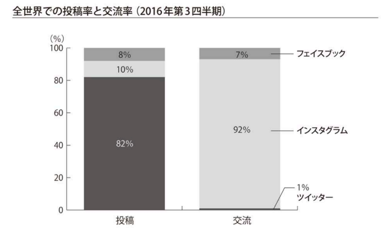
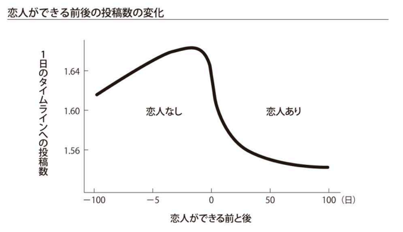
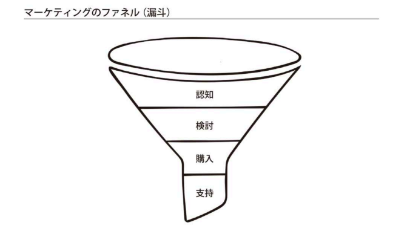
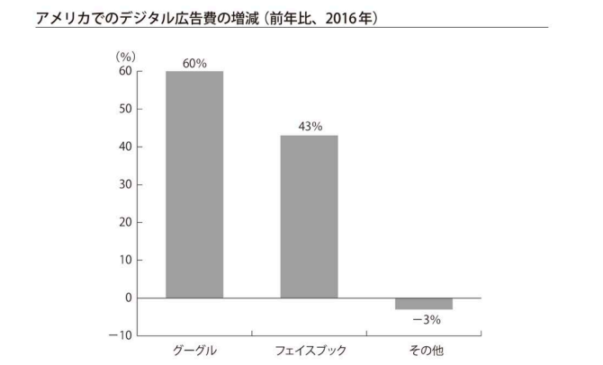

-

-
導入
今回はスコット・ギャロウェイ（世界最高のビジネススクール教授50人の一人。ニューヨーク大学スターン経営大学院教授であり、起業家、ニューヨーク・タイムズ取締役なども歴任）の著書『the four GAFA 四騎士が創り変えた世界』をもとにお話をしていきたいと思います。
本書では、Google、Amazon、Facebook、Apple（GAFA）の4つの企業を「ヨハネの黙示録」の四騎士になぞらえています。 四騎士とは、それぞれが「地上の四分の一の支配」そして「剣と飢饉と死・獣により、地上の人間を殺す権威」を与えられているとされるもので、その支配力についての本です。
また、この話は前回のOPNの『Age Of』で触れた貧富差が拡大して中産階級が崩壊し、共和党を支持せざるを得ない今の米国の人たちの話の続きでもあります。
GAFAにIT企業の老舗であるMicrosoftを加えた5社の株式時価総額は、4兆1579億ドル（約461兆円）にも達しています（2018年8月）。 日本の2017年の名目GDPが4兆8721億ドル（約541兆円）ですので、この5社だけで世界第3位の経済大国である日本の85%の経済規模で、第4位のドイツをも上回っています。圧倒的規模感です。 ここまで世界の経済構造を変えてしまったGAFAとは何か？
そして、その後待ち受ける世界とは？では、はじめてみたいと思います。 -


-
平成元年／平成30年 世界時価総額ランキング
30年で世界の企業勢力は一変した。

-
平成元年／平成30年 世界時価総額ランキング

-
Amazon
10年で1910%成長した小売巨人
Amazon.com, Inc. （ワシントン州シアトル）
設立：1994年／創業者：ジェフ・ベゾス1.初期戦法
A.本に絞る
消費期限もなくリスクも少ない。B.「物を集める本能」（狩猟本能）に訴える
いまや商品検索ではgoogle（28%）を超える55%C.ワン・クリックオーダー
①どこよりも簡単に、どこよりも早く
②どこよりも安く（コストダウン）a. 実店舗コストは当然かからない
b. ユーザーレビューによって宣伝費が要らない
c. アマゾン・マーケットプレイスにより在庫を抱えないで済む
購入が多い分野があれば自ら参入する際のデータ収集にもなる。
売上400億ドル到達。アマゾン全体の売上げの40%を占める。 -


-
Amazon
2.シェア拡大
A.狙われた小売り業界
街の店舗、デパート、ショッピングモール、大規模小売店、専門店など一気に敗北。
ほぼアマゾンだけが成長する世界。B.アマゾン・プライムの普及
全米世帯の52%が加入している。3.他社と違った資金の使い方
A.金が入れば輸送に投資（陸・海・空を握る）
20機のボーイング767のリース、トラクター・トレーラーなど購入。
フルフィルメント・バイ・アマゾン（FBA）。
海上輸送業者の免許取得など輸送業支配も進める（他社製品の輸送も握る）。B.安くて面白そうなものに沢山投資
空飛ぶ倉庫やドローンを弓矢の攻撃から守るシステムなど。
当たるかどうかはさておき、とにかく安くて面白そうなものに投資。
面白そうなストーリーに投資家は将来性を感じ出資する。
アマゾンはストーリーテリングが魅力的。C.倉庫をひたすらロボ化
2012年、こっそり倉庫ロボット会社キバ・システムズを買収。
2016年、ロボット数を50%増。
アマゾンはこうした話はあまり伝えない。ベゾスは雇用において弱者の味方ともいえるスタンスを取っているが、実際は倉庫に全く人間がいない。
この先も人間の雇用を増やすプランはない。 - Amazon 
-
Amazon
4.今後
A.ゼロクリック・オーダー（さらに購入感の敷居を下げる）
①アマゾン・エコー（AI：アレクサ搭載）
②アマゾン・ゴー（無人のAIコンビニ）B.スーパーマーケット市場の略奪
①アマゾン・フレッシュ
②ホールフーズ社（スーパー）買収（2017年）
裕福層地域の460店舗を手に入れる
a.輸送拠点や返品窓口としても使えるので、輸送コストを削減できる。
b.今後コンビニ・チェーンの買収や外食産業のシェア略奪も予想できる。
c.この分野は中国の方が先を行っている。料理もオーダーできる。C.雇用は破壊される
レジ係340万人（全米の労働者の2.6%。全米小・中学校の教師の数とほぼ同じ）、販売員280万人、倉庫120万人が職を失う可能性がある。 -
2018/03/30

Echoシリーズでできること
Echoシリーズは音声だけでリモート操作できるスマートスピーカーです。「アレクサ」と話しかけるだけで、音楽の再生、天気やニュースの読み上げ、スマートホームの操作、アラームのセットなど音声操作を簡単を行えます。あなたの生活をサポート
タイマーやアラームのセット、買い物リストの管理、予定を確認したり追加したりなども声だけで簡単に。さらに、出かける前に天気やニュースを聞いたり、スポーツの試合の結果、近くのレストランなどの確認もできます。音楽再生も話しかけるだけ
話しかけるだけで音楽を再生することができます。
楽曲名、アーティスト名、年代別やジャンルで指定して再生や、Alexaに選曲をまかせることもできます。
※サービスの利用には別途登録・契約や料金が必要な場合があります。 -
2018/1/22 (一般公開)
Amazon Go 1st store
所在地 2131 7th Ave, Seattle, WA 98121並びません。レジ会計がありません。（本当にないんです。）
Amazon Goは、レジに並ばずレジ会計のない新種のストアです。商品を手に取り、出ていくだけ！
お客様はただAmazon Goアプリを使いストアに入り、新鮮で美味しいお弁当や必須の食料品から欲しいものを取り、出ていくだけなんです！ -
2017/3/28
AmazonFresh Pickup
is a fast and easy way to order groceries, pick them up, and be on your way in minutes. All you have to do is drive in…and drive out.アマゾンが新しく始めたAmazonFresh Pickupは新鮮な肉、魚、パン、乳製品などの食料品のほか、日用品雑貨まで数千種類を取り揃える実店舗のスーパーマーケットです。
モバイルアプリケーションから商品を注文し、商品を取りに行くピックアップ時間を選択。
車で店舗に向かうと、従業員がすでに商品を持って待機しており、荷物を受け取ることができます。 -
Apple
ジョブズという教祖を崇める宗教
Apple Inc. （カリフォルニア州クパチーノ市）
設立：1976年／創業者：スティーブ・ジョブズ、スティーブ・ウォズニアック現在、代表者はアーサー・レビンソン（会長）、ティム・クック（CEO）
歴史上最も利益の大きな企業
2016年、純利益457億ドル（約5兆円）でダントツ世界1位に。（アマゾンの2倍の利益）。
資金はデンマークのGDPとほぼ同じ。2018年、時価総額1兆ドルを四騎士で最初に達成。 - Be a Steve Jobs.
-
Apple
1.スティーブ・ジョブズはなぜ崇拝されたのか？
2.ジョブズ帰還後の神がかったアップルの10年
脳から下半身へ（ステータスシンボル。自分の価値を上げるもの）
オタクのための商品から、高級ブランド・贅沢品ビジネス路線に切り替える。
より小さく美しく。
2001年からのiPod、iTunes、iPhone、iPadの連続リリース。3.高級ブランドビジネスの５条件を兼ね備える
①アイコン的な創業者
②職人気質
③垂直統合（メーカー直営）
高利益率の要。中国などにサプライチェーンを持ちタックスヘイブンで税金逃れもする。
④世界展開
世界の裕福層の趣向はかなり単一的（ブランドが世界展開できる理由）。
勝因はiPhoneよりもアップルストア。良い物は良い所で買いたいブランド志向心理。
⑤高価格（高利益率）
例／スマホ市場のシェアは、台数では14.5%にすぎないが全世界のスマホの利益の79%を独占。4.四騎士の中で生存の可能性が最も高い
テクノロジー企業は栄枯盛衰サイクルが早い。
高級ブランドは一回定着すると息が長い。 -
NHK BSドキュメンタリー『スティーブ・ジョブズ VS ビル・ゲイツ』
原題: Face to Face

Jobs vs. Gates: The Hippie and the Nerd (2014)スティーブ・ジョブズとビル・ゲイツ。時には対立しながらもパソコンの飛躍的普及を牽引した２人の歩みを描くドキュメンタリー
-
Facebook
人類の1/4をつなげた怪物
Facebook, Inc （カリフォルニア州メンローパーク）
設立：2004年／創業者：マーク・ザッカーバーグ達5名月間アクティブユーザー22億人（普及率と使用率を基準にすれば史上最も成功している企業）
世界の人口：75億、中国の人口：14億、キリスト教徒：22億、イスラム教徒：16億1.全ては高学歴オタクのやっかみから
好きな子にバカにされたハーバード大学の生徒が女子の格付けサイトFACEMASHを開発。2.「人の繋がりたい本能」に訴える
75年にわたるグラント・スタディ研究。人は人間関係の親密さ・愛に最も幸せを覚える。
セロトニンが分泌され中毒になる。 -
映画『ソーシャル・ネットワーク』

ソーシャル・ネットワーキング・サイト「Facebook」の設立とそれに伴う訴訟を描いた伝記ドラマ映画。
-
Facebook

3.インスタグラム買収
2016年、僅か13人のインスタグラムを2億ドルで買収。
しかし資産価値は8倍以上になった。
インスタグラムは交流率が異常に高い。 -
Facebook
4.フェイクニュースはおいしい？
A.感情がクリックを増やす
政治問題や対立と怒りを煽るものは一番クリックされる。そのヒット率が上がればそれでさらにクリックとシェアが増える。
フェイスブックはフェイクニュースと戦っているという。通報ツールも導入した。
しかし虚偽と思える記事に「真偽に疑問あり」というラベルがつくだけですぐ消えない。
近年、紛争や分断の助長になっているという指摘が多い。
しかし自分たちの商品力に関わる不適切表現や、検閲の強い国の政治的投稿はコンテンツ・モデレーターがすぐに消す。
汚れ仕事の大半はフィリピンの安い労働力。B.クリック、ビュー数が企業価値
虚偽の記事をすぐ削除すれば、何十億というクリック数と多額の収益を犠牲にする。 -
Facebook

5.ユーザーのアルゴリズムを抜く
例えば、恋人がいる時いない時の変化もフェイスブックは読み取っている。
普通の商品は使うほどに価値が下がるが、フェイスブックはどんどん性能が上がる。
Facetimeアプリは電話内容も記録している。これらは全てどういう人にどういう商品を表示させれば売れるかという広告配信に利用される。 -
Facebook
6.マーケティングのファネルになる
＝購入したい物の「認知」部分を握る。
フェイスブック、インスタで他人の購入物を知る。（人は買ったものをSNSで自慢する）
グーグルやアマゾンで「検討」、アマゾンなどで「購入」する。広告主はフェイスブックに広告を出さざるを得ない。
-
Facebook
7.全ては広告利益のため
現在、フェイスブックとグーグル2社で世界のモバイル広告費の50%以上を支配。
年齢・性別・エリア・属性、類似ユーザーなどセグメント精度はどんどん進化している。
 -
Google
1日35億の問いに答える現代人の神
Alphabet （カリフォルニア州マウンテンビュー：Googleplex）
設立：1998年／創業者：ラリー・ペイジとセルゲイ・ブリン1.標語は「ドント・ビー・イーヴル」（悪事を働くな）
2.神としての姿（遍く人々に公平で中立）
①シンプルなトップ画面
②老若男女、場所、貧富の差別がない
歴史や治療法、悩み・恋愛相談、恥ずかしい性癖を満たす動画のオーダーまで過去のどんな神より我々はパーソナルな事を打ち明けている。
③オーガニック（自然検索）と広告は別。広告はオークション制にする3.祖先の神を超える
この神を持たなかった私たちの祖先は、大体謎を抱えたまま生きていた。
祈り、許しを乞い、断食もした。
そこまでしても昔は北朝鮮の核がいくつあるか知るのは難しかった。
現代の神はただ検索フィールドに疑問を入力するだけですぐに答えをくれる。 -
Google
4.天罰も下る
好ましくない判断をされたサイトは検索順位を落とされ復帰は難しい。5.史上最強のIQの持ち主が集まる場所
福利厚生を厚く快適にしまくり他所でGoogleを脅かすアイデアが浮かばないよう囲い込む。（IT業界はそういう事で転覆が起こりやすため）
勤務時間の20%は好きなプロジェクトに従事してよい「20%ルール」。
良い人ばかりを採用。天才が嫌がらない環境を整える。
99%のそこそこ良い人と1%の超天才がいてくれれば良い世界。6.目指すは地球にあるもの全てのデータ化
場所（グーグルマップ）、天文（グーグルスカイ）、地理（グーグルアース、グーグルオーシャン）、書籍・報道データ（グーグル・ライブラリ・プロジェクト）etc7.使えば使うほど成長するビッグデータ
検索によるクリック情報の収取、地図登録による写真が撮られた位置情報の収取、とにかく利用者のアルゴリズムをグーグルは集めている。
また人工知能（AI）の分野にも巨額の投資をしている。
もしシンギュラリティが起こるとしたらビッグデータを握るGoogleが引き起こす可能性は高い。 -
映画『インターン・シップ』

2013年にアメリカ合衆国で製作されたコメディ映画。
Google本社が撮影協力 -
GAFAが掴んだ人類の根源的欲求
・Googleは脳
（歴史、知識、悩み相談まで何でも調べられる）・Amazonは狩猟本能
（欲しいものを何でも調べられ手に入れられる）・Facebookは心
（承認欲求、人とつながりたいという欲求を満たす）・Appleは下半身
（ステータスシンボル。自分の価値を上げるもの）GAFAに共通する8つの要素
①商品の差別化（面倒が減る。本能的に必要）
②ビジョンへの投資（安い資本を集める。資本家ウケがいい）
③世界展開（どこでも使えるインフラになる）
④好感度（住み良い社会になる貢献をしている）
⑤垂直統合（流通のコントロール）
⑥AI（データ量と活用能力）
⑦キャリアの箔づけになる（優秀な頭脳が集う）
⑧地の利（優秀な頭脳が集まる場所に近い） -
GAFA後の世界
1.母国（米国）はしんどい
「大企業が儲かると従業員が豊かになり国が豊かになる」という過去の産業革命の逆回転。A.雇用の減少と中産階級の崩壊
例／GMの従業員数215000人に対し、フェイスブックはたったの17000人。B.知性主義、グローバル化による経済格差
C.税金が入らない
GAFAはタックスヘイブンしまくり。2.世界には良い面も（貧しい国に雇用が増える）
中国、インド、中南米など安い労働力を提供できる国は雇用が増える。しかし、不適切表現処理などの汚れ仕事もある。世界の給料はだんだん近くなる。
テクノロジー、ネットが発達するほど、マイノリティは繋がり生きやすくなる。しかし炎上記事も簡単に上げられる。フェイクニュースは世界の民主主義を破壊する。3.20世紀を支えたシステムが綻びる
経済は米国ではなく世界に最適化される。
権力や国家の力がグローバル企業により分散される。（多極化ネットワーク） -
NEXT GAFA
・アリババ（中国）…eコマース、ショッピング、送金
・テスラ（米国）…電気自動車、ソーラーパネル
・ウーバー（米国）…配車プラットフォーム
・ウォルマート（米国）…スーパーマーケット、ディスカウントストア
・マイクロソフト（米国）…情報・通信業
・エアビーアンドビー（米国）…ソーシャルネットワーキングサービス
・IBM（米国）…電気機器
・ベライゾン／AT&T／コムキャスト／タイム・ワーナー …通信、CATV